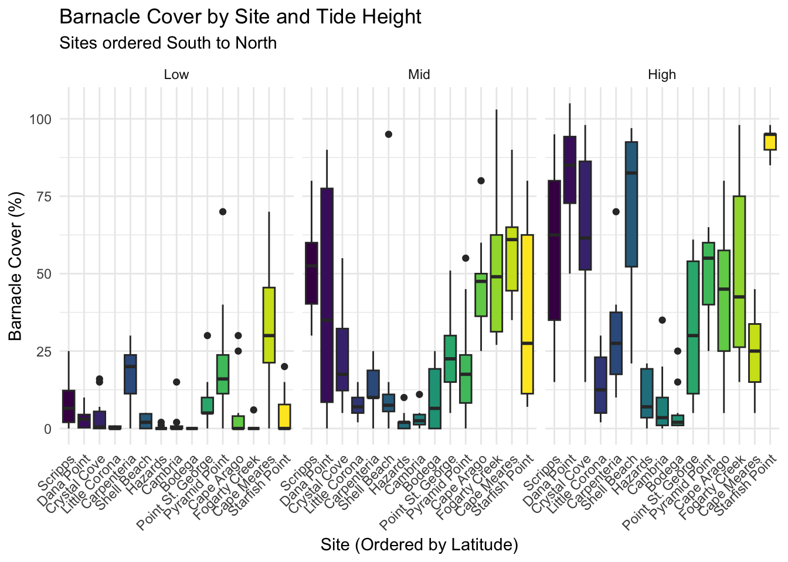

library(tidyverse)
library(janitor)
library(here)Week 9 HW
Setup
Let’s setup. Loading the usual suspects. - tidyverse: Because we’re not monsters writing base R. - janitor: To fix whatever column names we were given. - here: So R doesn’t yell at me about file paths.
Load Data
Reading in the data. here() just makes life easier.
# Main
intertidal_data <- read_csv(here("Week_09", "data", "intertidaldata.csv"))Rows: 450 Columns: 13
── Column specification ────────────────────────────────────────────────────────
Delimiter: ","
chr (2): Site, Quadrat
dbl (11): Transect, Bare Rock, Algae, Mussels, Small Barnacles, Large Barnac...
ℹ Use `spec()` to retrieve the full column specification for this data.
ℹ Specify the column types or set `show_col_types = FALSE` to quiet this message.# Latitudes ok but why is this a separate file?
latitude_data <- read_csv(here("Week_09", "data", "intertidaldata_latitude.csv"))Rows: 15 Columns: 2
── Column specification ────────────────────────────────────────────────────────
Delimiter: ","
chr (1): Site
dbl (1): Latitude
ℹ Use `spec()` to retrieve the full column specification for this data.
ℹ Specify the column types or set `show_col_types = FALSE` to quiet this message.Clean and Prepare Data
Okay, this is the actual work. Gotta wrangle this data into submission. 1. janitor::clean_names() on everything. obv. 2. left_join to stick the latitudes on. 3. Fix the inevitable typos in the character data. 4. Reorder tide_height because ‘High, Low, Mid’ isnt it. 5. Reorder site by latitude, as requested. fct_reorder should do this.
# Clean 'em up
intertidal_data_clean <- clean_names(intertidal_data)
latitude_data_clean <- clean_names(latitude_data)
# Smash 'em together.
# This adds the 'latitude' column to our main dataset
joined_data <- left_join(intertidal_data_clean, latitude_data_clean, by = "site")
# The actual wrangling part.
cleaned_data <- joined_data |>
mutate(
# 1. Create total barnacle cover by summing % cover
barnacle_cover_percent = small_barnacles + large_barnacles,
# 2. Fix tide height strings.
# This is a much better way. We'll just *extract* the words we want,
# ignoring all the other junk like dots and spaces.
# We make everything uppercase first to match "LOW", "MID", or "HIGH"
# then just capitalize the first letter.
tide_height = str_to_title(str_extract(toupper(quadrat), "LOW|MID|HIGH")),
# 3. `fct_reorder` to sort sites by latitude. Hope this works.
# The default is ascending (South to North), which is perfect.
site = fct_reorder(site, latitude)
) |>
# 4. NOW, we explicitly filter out any rows that didn't have
# "Low", "Mid", or "High" (which are now NA)
filter(!is.na(tide_height)) |>
# 5. And *finally* we make it a factor and set the levels
mutate(
tide_height = fct_relevel(tide_height, "Low", "Mid", "High")
)
# Let's check our work!
# Uncomment this to check levels if it breaks
# levels(cleaned_data$tide_height)
# levels(cleaned_data$site)Visualize Data
Finally, the plot. With the factors hopefully sorted correctly, the x-axis should actually make sense (South to North).
Just throwing this into a boxplot. facet_wrap by tide height seems like the obvious move.
# Make the plot.
intertidal_plot <- ggplot(cleaned_data, aes(x = site, y = barnacle_cover_percent)) +
geom_boxplot(aes(fill = site), show.legend = FALSE) +
facet_wrap(~ tide_height) + # Split by tide height
labs(
title = "Barnacle Cover by Site and Tide Height",
subtitle = "Sites are *supposed* to be ordered South to North",
x = "Site (Ordered by Latitude)",
y = "Barnacle Cover (%)"
) +
theme_minimal() +
theme(axis.text.x = element_text(angle = 45, hjust = 1)) # Angle x-axis text so it's not a total mess
# Show me the plot.
intertidal_plot
Save Plot
Annnndddd save it. Right into the Outputs folder.
Save it and be done.
ggsave( filename = here(“Week_09”, “Outputs”, “barnacle_cover_by_site_latitude.png”), plot = intertidal_plot, width = 8, height = 6, dpi = 300)